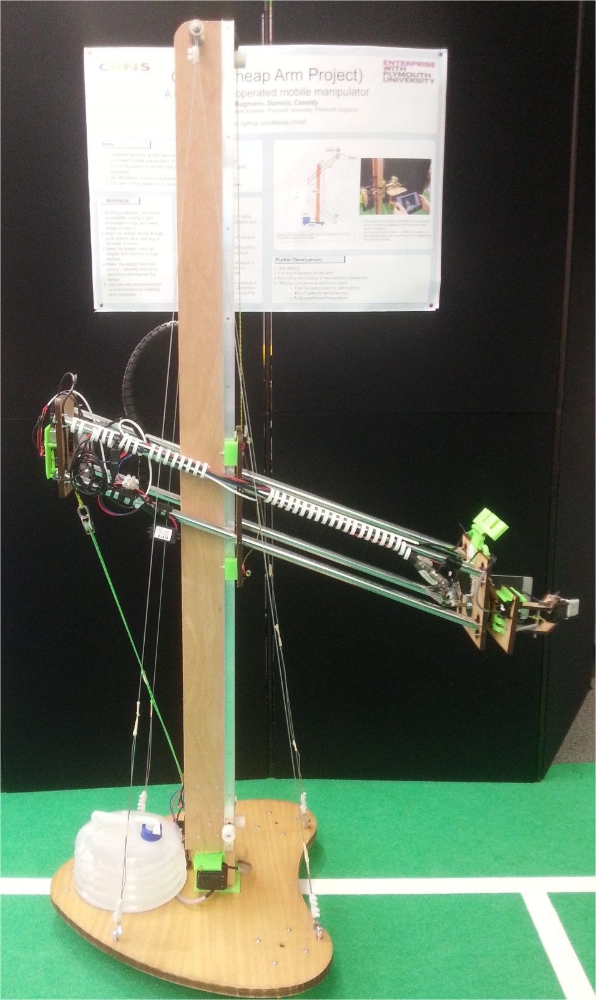

Welcome to the CHAP homepage, our website is still a work in process. We are currently added source code and designs for CHAP as well as supporting research. Please take a look around and feel free to support development or fork the designs for your own project!
Research papers describing the developments of the robot arm and subsequent experimentation will be provided for each version of the CHAP system.
This report examines the strengths and weaknesses of the robot's hardware. Following trials, it is dicovered that the gripper is underpowered and requires additional power or an improved motor for better results.
This report desribes the logic and control flow of the developed tele-operation system. It is found that the use of web technologies created a reliable system accessible by all test operating systems and devices.
All materials used in the development of the CHeap Arm Project are open source and fully available on GitHub. Designs and software can be found below: